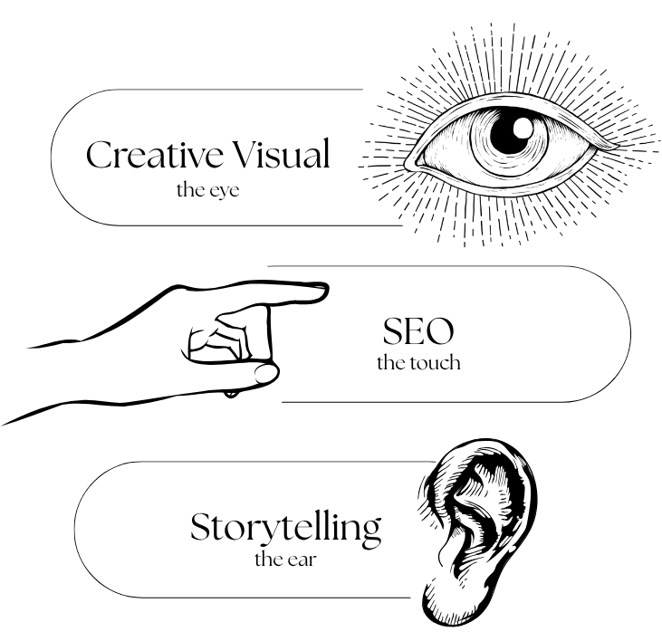

Making contents that's
At Elden, we believe consistency builds trust and trust drives growth. Content marketing isn’t just about producing posts or articles; it’s about creating value that connects. We craft purposeful content strategies that educate, inspire, and engage. Turning your brand into a trusted voice in its field.

From storytelling and SEO to multi-platform distribution, every piece of content is planned to meet both audience needs and business goals. Through collaboration across strategy, creative, and analytics, Elden ensures that your content doesn’t just get seen, it gets remembered.